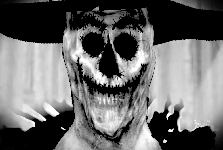
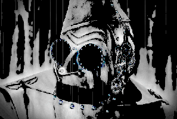
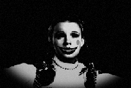

Upon entering the eyes of the hurriances in Kansas, either voluntarily or involuntarily, visitors are transported to the beginning of the red road by the witch of the west, and the witch will explain the rules and the reward for overcoming Oz before the Oz's games starts. In Kansas, no one ever die as a result of hurranice, only forever trapped in Oz upon losing the game.
Four of Oz's main features are as follows:
The scarecrow man can be found wandering the corpse fields, tearing skulls apart to get to the brains within, his craving for fresh brains is insatiable.The ironman can be found wandering around his orchard, where beating hearts hangs off the trees like apples. He's always looking for new kinds of hearts, and are always willing to get his hands dirty in his quest for the ultimate heart.The lion king is found within the skeleton forest, he's always seen sucking the marrows out of various bones belonging to monsters of all sizes. His hunger for flesh is matched by only the stawman's craving for brains.Donny is the Nightmares of Oz's main feature. What makes her unique is craving for memories of home, and her ability to steal those memories. She can be found wandering up and down the red road, which runs through the corpse fields, the heart orchard and the skeleton forest to the source of all that's wrong in Oz: The finish line!
There's countless other features to be discovered along the red road!